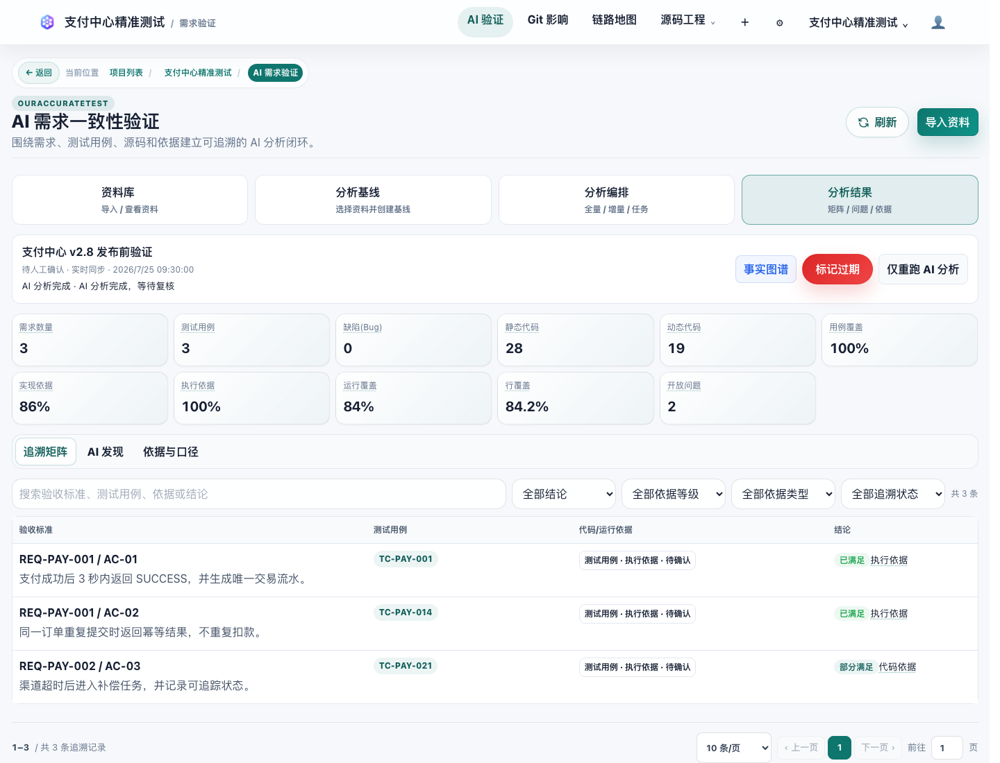
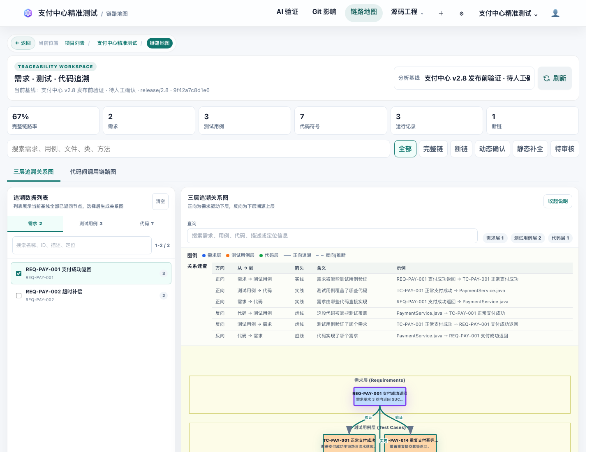
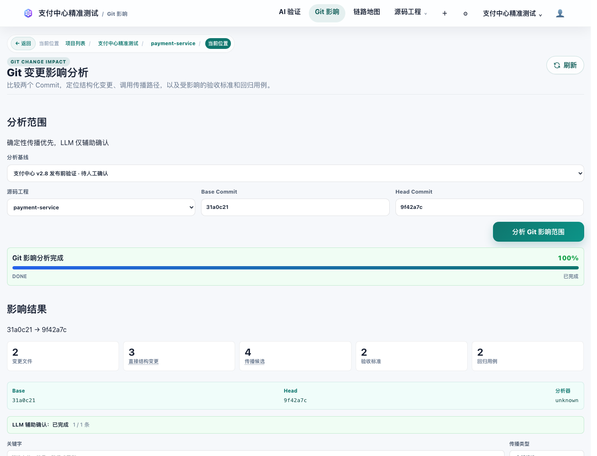
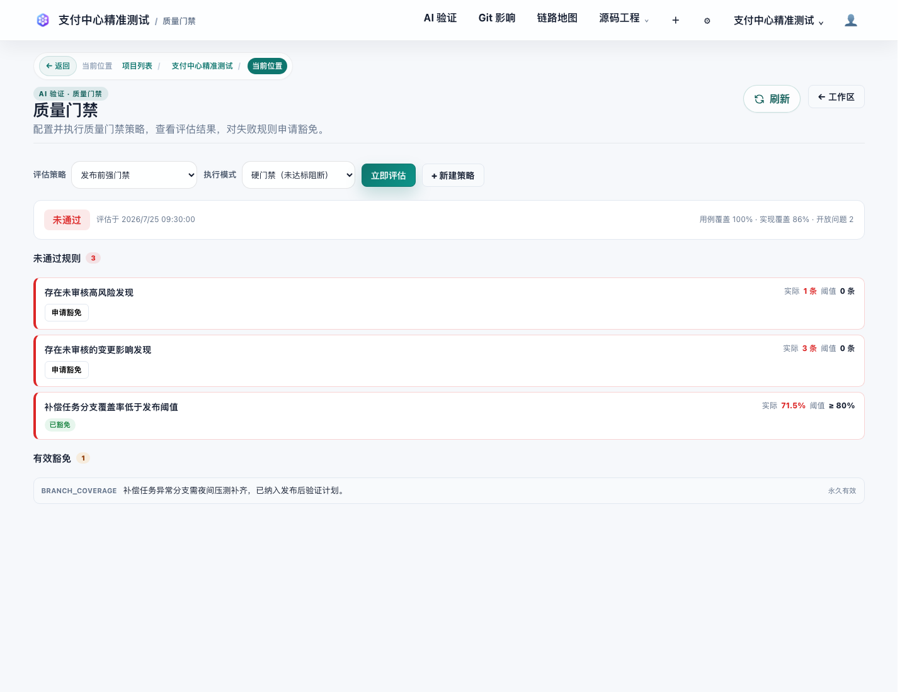

01
建立验证基线
导入需求、验收标准、测试用例、源码快照、执行依据和覆盖率，让后续分析基于同一组版本化依据。

AI Requirement Verification
从需求和用例导入开始，串联 AI 验证、链路地图、Git 影响分析和质量门禁， 帮助团队判断每次实现与变更是否真的满足需求。
User Flow
页面按研发和测试实际使用路径组织：先沉淀验证基线，再让 AI 生成可复核发现， 通过链路地图定位缺口，最后把 Git 变更影响纳入门禁。
导入需求、验收标准、测试用例、源码快照、执行依据和覆盖率，让后续分析基于同一组版本化依据。
LLM 结合结构化依据生成追溯关系、覆盖缺口、实现偏差和风险摘要，结果进入人工复核队列。

以需求、用例、代码、执行依据和覆盖率为节点，沿着验证链路定位断点、弱关联和需要补充的材料。

选择 Commit 或 Diff 后，系统映射变更文件与方法，标记受影响的需求、用例、链路和 AI 结论。

按通过率、未覆盖需求、未审核风险和变更影响判断发布状态，保留豁免和复核记录。

Daily Scenarios
核心功能面向三类高频问题：需求有没有被验证、变更会影响哪里、当前版本能不能进入下一阶段。
用需求、用例、源码和执行依据共同约束 AI 输出，形成可追溯、可复核的风险发现。
查看需求、用例、源码、接口、执行结果、覆盖率和 AI 发现之间的关联关系。
基于 Commit、Diff 和源码快照识别影响范围，并把过期链路和待复核项推送到验证流程。
按覆盖率、未关联需求、未审核风险和 stale 状态生成门禁结论，支持豁免记录。
解析 Java 源码、字节码、接口端点和多语言覆盖率报告，为图谱和门禁提供结构化事实。
采集、过滤、查看、重放和导出 HTTP、HTTPS、WebSocket、MQTT 等流量。
Coverage Inputs
平台消费的是被测系统实际运行后的覆盖率文件。先用 agent、插桩包或运行时采集器启动应用， 再执行业务流量、接口自动化或端到端场景，最后导出报告并导入验证基线。
启动被测服务时挂载 JaCoCo agent 生成 jacoco.exec，场景跑完后用 JaCoCo CLI 转成 XML。
java -javaagent:jacocoagent.jar=destfile=jacoco.exec -jar app.jar
java -jar jacococli.jar report jacoco.exec --classfiles target/classes --sourcefiles src/main/java --xml jacoco.xml
用 nyc/Istanbul 包裹被测 Node 服务或插桩前端代码，真实场景结束后生成 LCOV。
nyc --reporter=lcov --report-dir coverage node server.js
nyc report --reporter=lcov
用 coverage.py 包裹被测 Web 服务或任务进程，执行真实请求后导出 XML 或 LCOV。
coverage run -m uvicorn app:app
coverage xml -o coverage.xml
构建带覆盖率插桩的可执行文件，运行真实服务后从 GOCOVERDIR 汇总 coverage.out。
go build -cover -o app ./cmd/app
GOCOVERDIR=./cov ./app
go tool covdata textfmt -i=./cov -o coverage.out
用 gcov/lcov 或 llvm-cov 插桩编译被测程序，场景执行后导出 LCOV 或 gcov 文件。
gcc --coverage -O0 app.c -o app
./app
lcov --capture --directory . --output-file coverage.info
把运行时产出的 JaCoCo XML、Istanbul LCOV、coverage.py XML、go cover 或 gcov/lcov 报告关联到当前基线。
基线 -> 覆盖率 -> 上传报告
Architecture
项目由平台 Web 前端、Spring Boot 后端服务、AI 接入模块和 Electron 桌面流量采集器组成。
Vue 3、TypeScript、Vite、Vue Router、Pinia，承载项目、版本、图谱和验证工作台。
Java 17、Spring Boot 3、PostgreSQL、Flyway，负责项目数据、源码分析和质量门禁。
基于 LangChain4j 接入 OpenAI 兼容接口、DeepSeek、Ollama 等模型服务。
Electron 桌面应用，提供本地代理、SQLite 会话记录、过滤规则和插件处理能力。
Quick Start
cd oAT-service
./oAT-service-web/mvnw -f pom.xml clean package -DskipTests
cd oAT-service-web
./start.shcd oAT-web-frontend
npm install
npm run devcd oAT-traffic-capture
npm install
npm run devContact